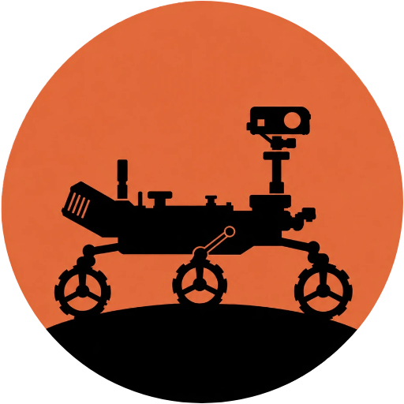
JezeroJezero Crater, Mars · NASA Space Apps Challenge 2026
Jezero Crater rebuilt from NASA's own data. Two ways into the same place: plan a crewed walk across it, or relive Perseverance's mission on the ground it drove.
Plan a Marswalk: terrain, slopes, sunlight and the sites Perseverance studied, with routes of lower estimated risk.
Drive Perseverance through seven real episodes, from the landing to the crater rim, or explore freely.
Overview
Jezero is a web application that turns the orbital and rover data of one Martian crater into a place you can plan in and drive through. It runs in the browser, needs no account, and works in English and Spanish.
A crew picks stops in Jezero Crater; the planner finds a walk of lower estimated risk on 1 m terrain, explains it, checks it against daylight and the walk-back limit, and prices science detours along the way. Anyone else can drive Perseverance through the episodes that made it famous — on the very same ground, with NASA's own pictures.
The first crews on Mars will need more than a pretty globe: they will need to know where they can walk, how long it takes, what they will find, and when the Sun goes down. That information exists today — but it is spread across missions, instruments, coordinate frames and archives.
The challenge asks for an integrated, layered map that helps astronauts plan a Marswalk, carry it out, do science along the way, and stay informed about conditions. Jezero answers it for one real place, in depth, rather than for the whole planet in outline.
A 45 km crater that held a lake about 3.5 billion years ago; the river delta it left is still preserved on its western side. NASA's Perseverance rover has explored it since February 2021, collecting rock samples for possible return to Earth. Few places on Mars are known as well: 1 m orbital terrain, a rover traverse localized in the mission's own frame, measured weather and real panoramas from the ground.
The Planner is for a crew: plan, understand, check and share a walk. The Rover game is for everyone else: drive Perseverance through its real episodes on the same ground. Both share the terrain, the places and the rover's route — any site in the planner that lies on a game map opens there.
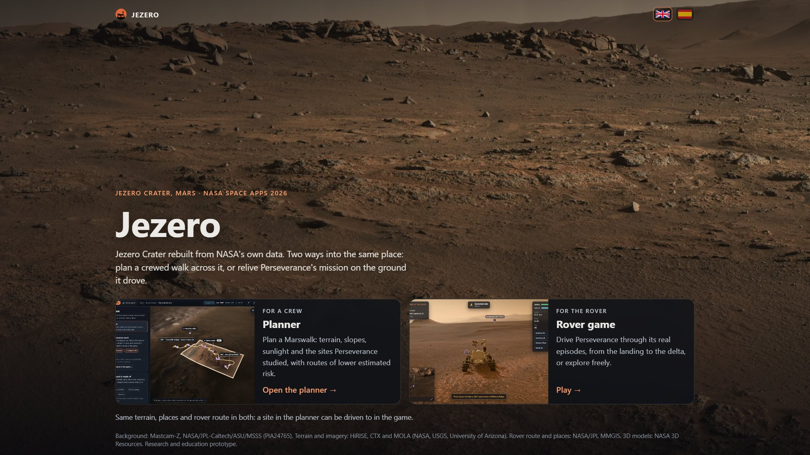
Every layer, place and number traces to a published NASA or partner product, with its date, resolution and limits one click away.
Routes are "lower estimated risk", never "safe". Calculated, measured and assumed values are labelled as such. Nothing is called live.
No sign-in, no tracking, two languages, keyboard and reduced-motion support, and an audited accessible interface.
The planner opens on Mars from orbit, under the sky as it would be seen from Jezero, and flies into the crater in one click.
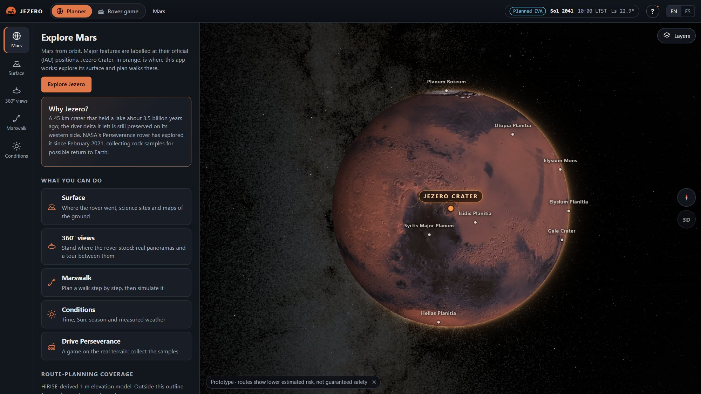
Terrain and imagery sit on the IAU 2015 Mars sphere, in the frame the Mars 2020 mission uses for its own localizations — not on Earth's ellipsoid.
Every naked-eye star (to magnitude 6.5), the planets and the Milky Way (ESA Gaia) at their true positions for the sol and hour chosen, as seen from Jezero.
Imagery sharpens on the way down — Viking 925 m → CTX 5 m → HiRISE 0.5 m, and 25 cm around the rover — with a visible outline where routes can be computed.
A rail on the left switches panels; the 3D scene stays in place. A breadcrumb (Mars › Jezero Crater › Operational area) and a mission clock (sol, local true solar time, solar longitude) sit in the top bar.
A welcome screen, a five-chapter guided tour, a "Things to try" checklist and a glossary introduce the app. A persistent notice reminds that routes show lower estimated risk, not guaranteed safety.
Planner · Marswalk
Choose stops, calculate, review, simulate, then save or share. Routes stay inside the coverage outline, on a 5 m grid derived from the 1 m HiRISE terrain model.
Pick on the map, from the science sites, by coordinates, or load the guided Marswalk. Set minutes at each stop.
A* search computes two alternatives: lower estimated risk and shortest feasible.
Metrics, an explanation, the elevation profile, the EVA timeline and nearby science stops.
Walk the route in 3D with an EVA clock, distance walked and slope underfoot.
Missions saved in the browser, share links, GeoJSON/CSV and a printable briefing.
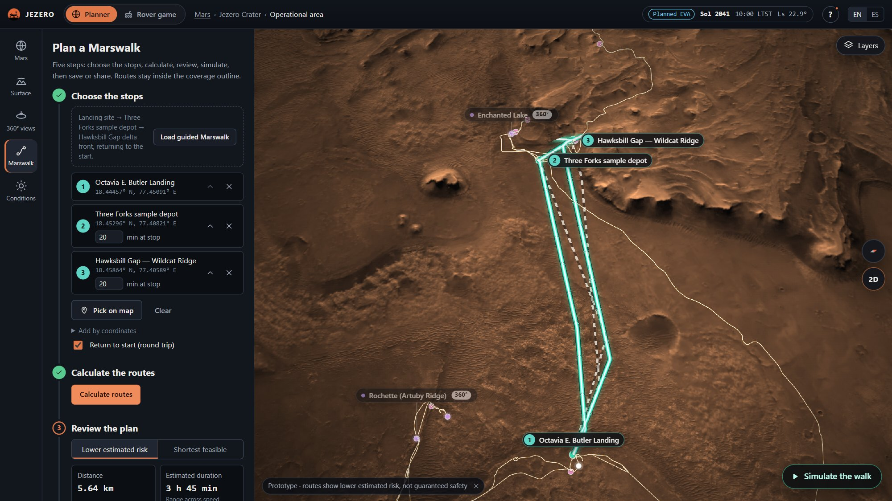
Planner · Review
The review step answers the questions a crew would ask before stepping out of the airlock — and shows the evidence behind each answer.
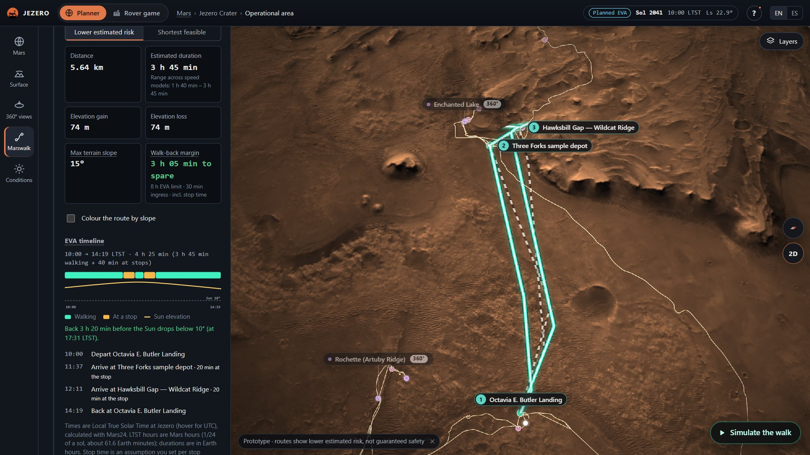
A walker follows the route in 3D with an EVA clock, distance walked, elevation, slope underfoot and the next stop. Pause, resume or end at any time.
Plans are saved in the browser, with versions. Rename, reopen or delete them; nothing leaves the device.
Share links recompute the same route deterministically on any machine. Export GeoJSON and CSV, or print a mission briefing.
Planner · Surface and layers
Orbital maps of slope, height, minerals and grain size, each with a legend and a source card giving mission, date, resolution, units and limitations. Click anywhere in the crater to inspect the planner's own grid values at that point.
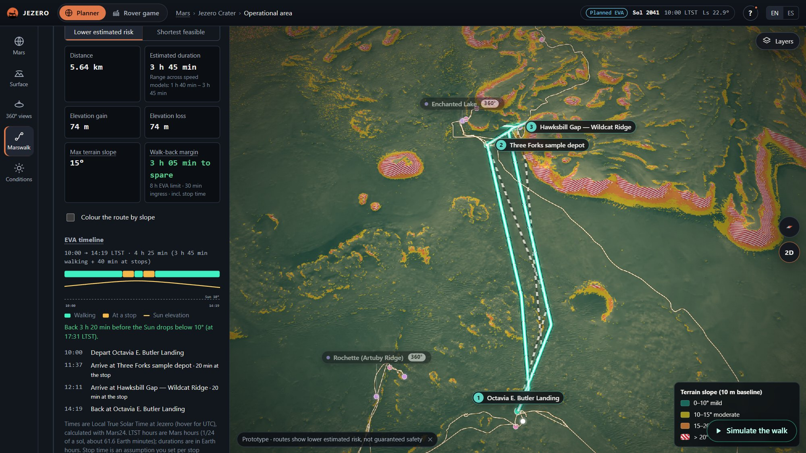
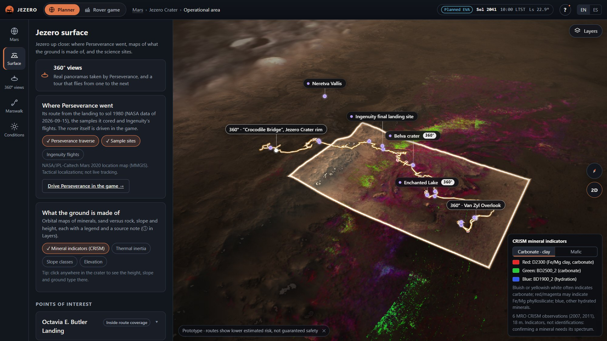
| Layer | Source | Resolution | What it tells a crew |
|---|---|---|---|
| Imagery tiers | Viking Orbiters · MRO CTX · MRO HiRISE | 925 m → 25 cm | What the ground looks like, sharpening with zoom |
| Slope classes | Mars 2020 TRN HiRISE DTM (USGS) | 1 m → 10 m base | Where walking gets hard or unsafe |
| Elevation | HiRISE DTM over CTX DEM and MOLA | 1–20 m | Height above the areoid (Mars datum) |
| Thermal inertia | Mars Odyssey THEMIS (Edwards & Buz 2021) | ~100 m | Loose sand versus rock and bedrock |
| Mineral indicators | MRO CRISM MTRDR composites | 18 m | Carbonates, clays, mafic minerals: science targets |
| Round-trip reach | Computed on the routing grid | 5 m | Everything reachable and back within a time budget |
| Rover, samples, Ingenuity | Mars 2020 MMGIS and PDS PLACES | tactical | Where Perseverance drove, cored and flew, with dates |
Planner · 360° views
Twelve real Mastcam-Z mosaics, each placed at the sol and spot where Perseverance took it. Their compass and horizon are measured by matching the photographed skyline to the terrain model, so labels of real places line up with the landscape.
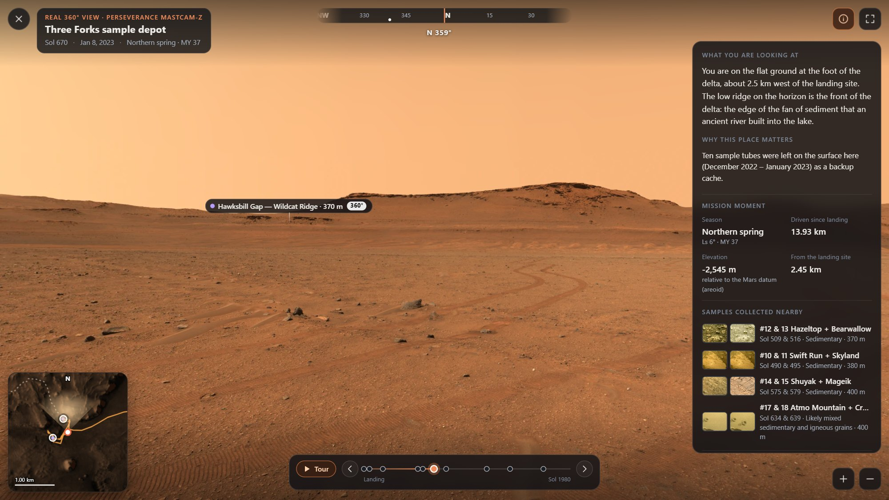
Places within 8 km, and other panoramas within 6 km, are labelled at their true direction and elevation; those hidden by terrain are dimmed, using line of sight on the elevation model.
From Octavia E. Butler Landing to Cheyava Falls and the crater rim. Each says why it matters and what a crew should investigate, with its sources, and can be added as a stop.
Perseverance's sample sites with the cored rock, the sol and NASA's close-up photographs of each sample, linked from the map and from the panoramas.
Planner · Conditions
No mission publishes live weather for Jezero. The planner says so, and separates what is calculated from what was measured, with the date of every value.
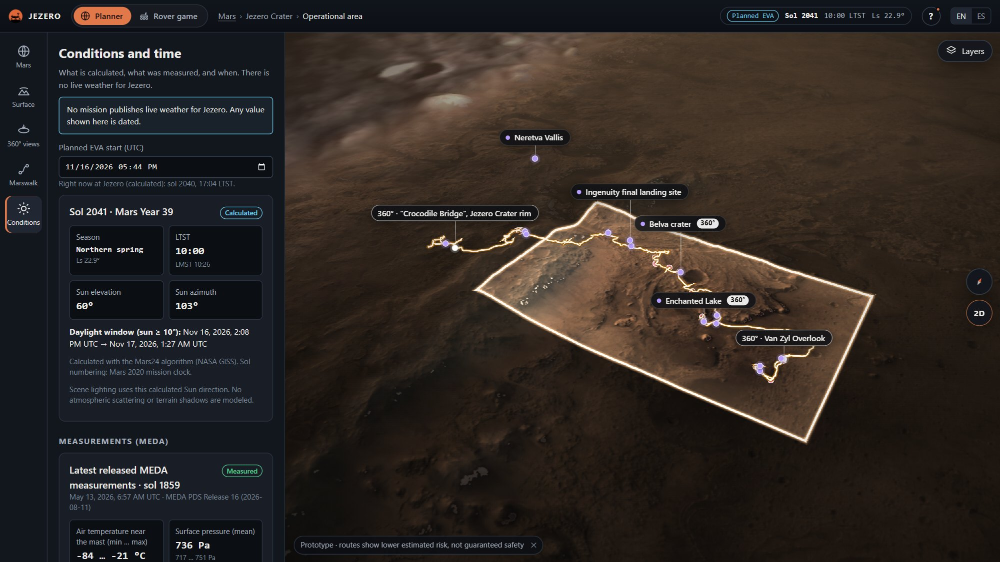
Mars24 algorithm (NASA GISS). Sol numbering: the Mars 2020 mission clock.
Mars 2020 MEDA calibrated data, NASA PDS Atmospheres Node.
English and Spanish throughout the planner, the game and the home page, switched at any time.
A whole route can be planned with the keyboard alone; reduced motion turns off camera flights and playback.
An automated WCAG 2.2 AA audit runs in a real browser; meaning is never carried by colour alone.
The real terrain from orbit, the real places, NASA's own images. Each episode runs on its own map rebuilt from orbital data, in the order the rover lived them. Progress is saved in the browser, per mission.
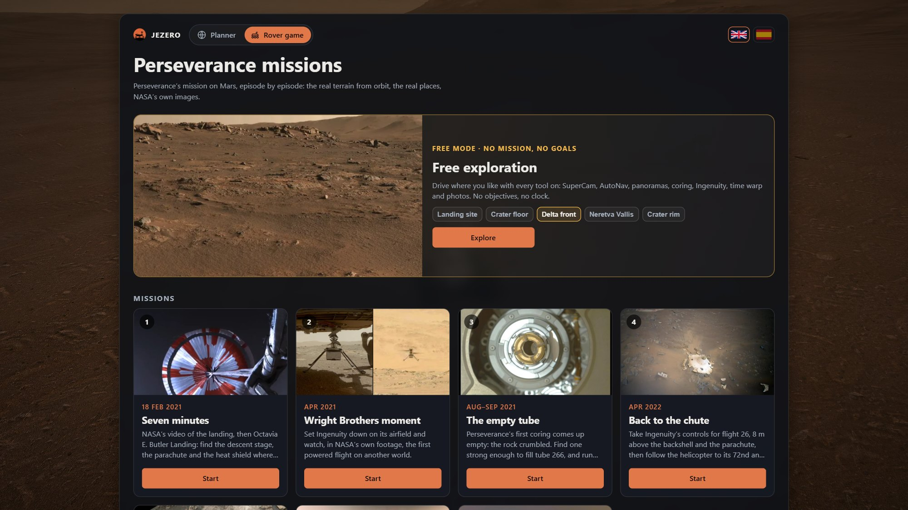
Around the rover: the HiRISE 1 m terrain model at 1 cm height steps, draped with HiRISE imagery.
12 km at 8 m (HiRISE feathered over CTX), then 64 km at 100 m (CTX over MOLA), out to the crater rim on the horizon.
Ground textures re-projected from Mastcam-Z panoramas (~3 mm per pixel); a dust haze layered as the measured atmospheric column.
Perseverance, Ingenuity and the sample tube are NASA's own 3D models (NASA 3D Resources). Where gameplay departs from history — for timing or playability — the story text says so.
Rover game · Missions
NASA's video of the landing, then Octavia E. Butler Landing: find the descent stage, the parachute and the heat shield where they fell.
As it really was: the hardware lies where HiRISE photographed it on 19 February 2021.
Set Ingenuity down on its airfield and watch, in NASA's own footage, the first powered flight on another world.
As it really was: Ingenuity flew 39.1 s on 19 April 2021 (sol 58); it went on to fly 72 times.
The first coring comes up empty: the rock crumbled. Find one strong enough to fill tube 266, and run MOXIE to make oxygen within the sol's energy budget.
As it really was: Roubion (sol 164) came back empty; Montdenier was sealed on 1 September 2021 (sol 190).
Take Ingenuity's controls for flight 26, 8 m above the backshell and the parachute, then follow the helicopter to its 72nd and last flight.
As it really was: Ingenuity flew 159 s on 19 April 2022 over the backshell and the parachute.
Four chapters: Hawksbill Gap, Wildcat Ridge and Amalik, and the first sample depot on another world, at Three Forks.
As it really was: the campaign ran from April 2022 to February 2023.
Cheyava Falls and its leopard spots: map the rock with three SuperCam analyses and core Sapphire Canyon, the best candidate sign of ancient life.
As it really was: Sapphire Canyon was cored on 21 July 2024 (sol 1215); confirming a biosignature needs the sample in a laboratory.
Climb to Lookout Hill and Witch Hazel Hill, among the oldest rocks on Mars, and stalk dust devils with the microphone on.
As it really was: Perseverance reached Lookout Hill on 10 December 2024 (sol 1354), after some 500 m of climbing.
Drive anywhere on five maps — landing site, crater floor, delta front, Neretva Vallis, crater rim — with every tool on: SuperCam, AutoNav, panoramas, coring, Ingenuity, time warp and photos. No objectives, no clock.
Rover game · Driving
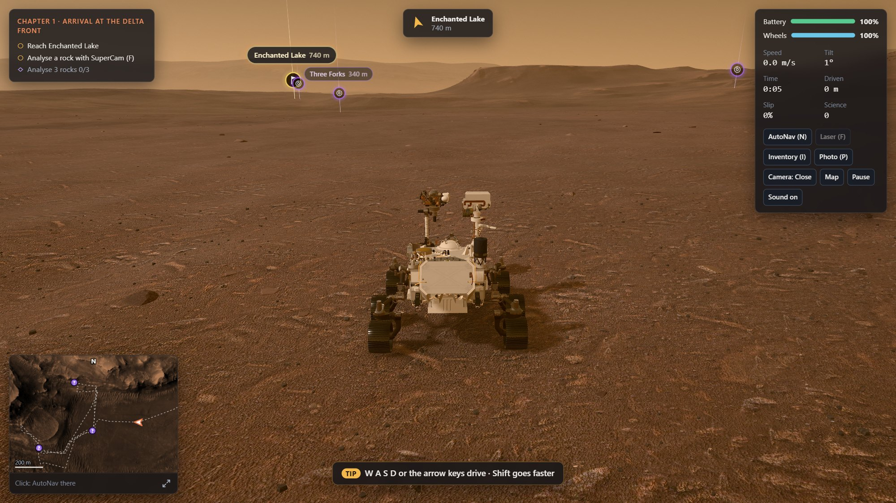
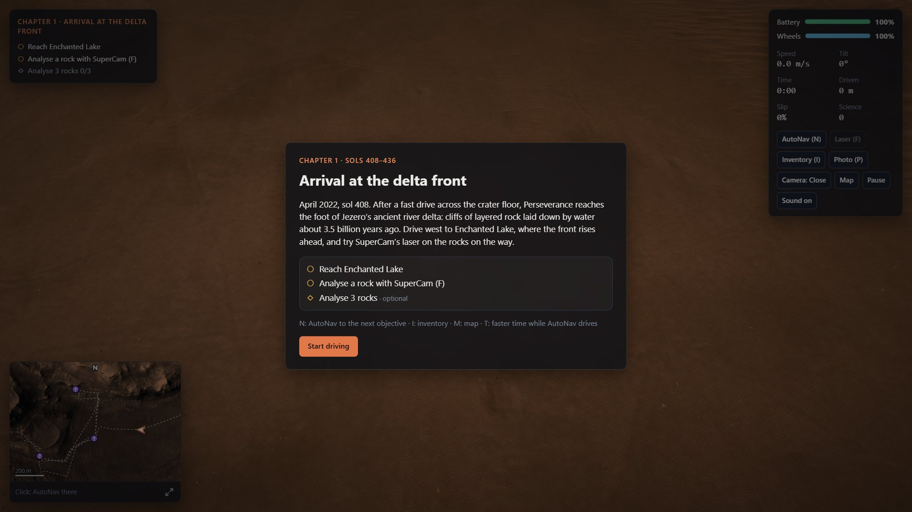
Rover game · Science
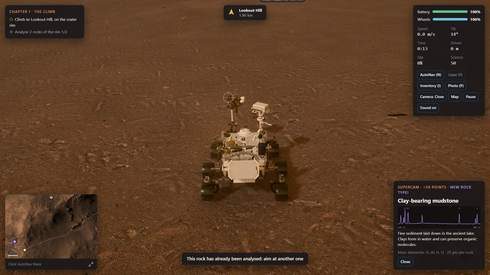
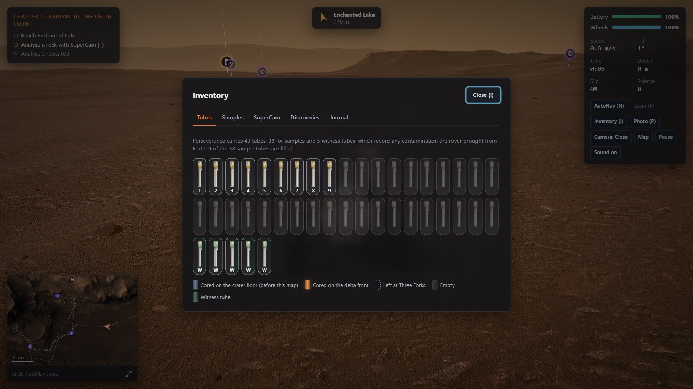
Basalt-like lava rock, olivine-rich rock, sulfate salts, clay-bearing mudstone, carbonate, silica (opal) and an iron–nickel meteorite — each with its own spectrum and story.
Stop inside a sample ring and the arm cores it. Each real sample earns a card with NASA's photograph of the core, its sol and why it was taken.
Make oxygen from the Martian air within the sol's energy budget, as the real experiment did — 122 g in 16 runs.
At a panorama spot, stop and press Space: Mastcam-Z takes a 360° mosaic — and the real one Perseverance took there appears.
On the rim, stop near a dust devil and record it with SuperCam's microphone.
Chapters open on what really happened, illustrated with NASA's images: MOXIE, Rochette, the backshell, the parachute, the leopard spots.
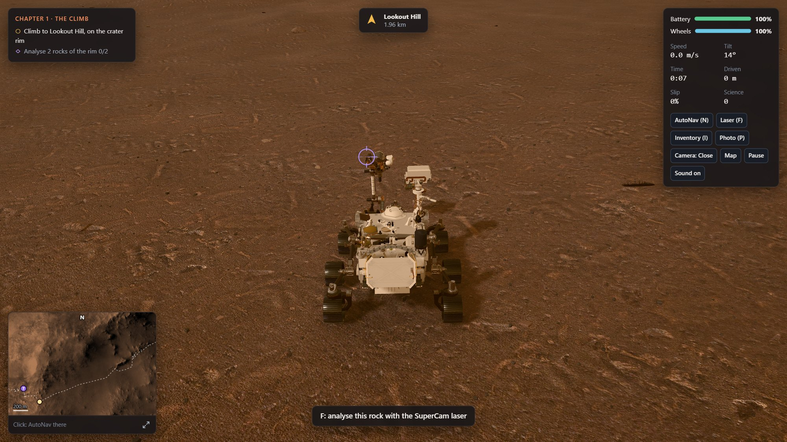
Rover game · Ingenuity
In "Back to the chute" the player takes the controls of the Mars helicopter for its flight 26: 8 m above the ground, over the backshell and the parachute that slowed Perseverance, before its 159 s of battery run out.
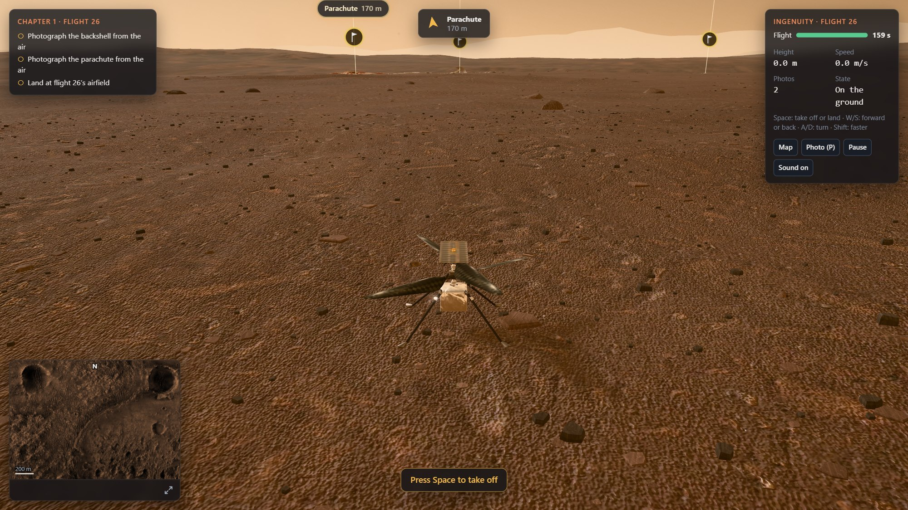
Both are built from the same HiRISE, CTX and MOLA products by the same reproducible pipeline.
The science sites, samples, panoramas and the rover's route are one catalogue, shared by both modes.
A planner site that lies on a game map opens there, in free exploration, at that point.
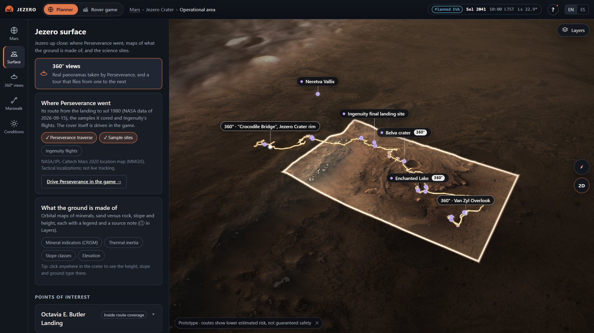
| Step | Method | Check |
|---|---|---|
| Frames | IAU 2015 Mars sphere (R = 3,396,190 m) and the Mars 2020 localization frame; heights above the areoid. A subtle reprojection pitfall (a 5.4 % scale error from the wrong standard parallel) was caught and corrected. | All 666 PDS PLACES rover localizations re-projected to ≤ 0.5 mm |
| Terrain | HiRISE 1 m DTM aggregated to a 5 m routing grid (2,250 × 1,424 cells, 79.7 km²) with elevation, fine-scale slope (median and P90) and thermal inertia. | 509 localizations inside the grid: elevation RMS 0.07 m, mean −0.01 m |
| Slope | Over a 10 m baseline, the scale of a walker's footing; 3.4 % of the area exceeds 20°. | Analytic slope planes in unit tests |
| Routing | A* on the 5 m grid with slope and no-data barriers and no corner-cutting; lower-risk and shortest-feasible cost profiles; detours priced per stop. | Property tests; route compute ~0.3 s for the guided 5.6 km loop |
| Walking limits | Speeds and a 20° limit from Apollo surface EVAs and Artemis studies (lunar), labelled as assumptions. | Sensitivity: route recomputed at 15°, 20° and 25° |
| Time and Sun | Mars24 algorithm for sol, LTST and Ls; Sun direction from the IAU 2015 rotation. | Mars24 worked examples; Sun direction agrees to < 0.1° |
| Panoramas | Placed by sol; compass and horizon measured by matching the skyline to the terrain model. | Median residual reported per panorama |
A network guard in the browser tests proves the app contacts no external host: every tile, model and dataset is served from the same origin.
Every product is rebuilt from its public source by one pipeline; each remote file's header is checked before it is used.
The same stops give the same route to the millimetre on any machine, which is what makes share links trustworthy.
Each layer, place, sample and panorama carries its source, date and licence in the app's catalogue, shown to the user.
A reproducible pipeline turns public archives into tiles and grids; a static site serves three pages. There is no server-side logic, no account and no tracking: the whole app can be hosted on any static host.
| Area | Tools |
|---|---|
| Language | TypeScript (app and scientific core), Python (geospatial pipeline) |
| Interface | React, zustand (state), zod (data contracts), i18next (English / Spanish) |
| 3D | CesiumJS (planner globe and terrain), three.js (rover game) |
| Geospatial | GDAL, PROJ, Docker |
| Build and quality | Vite, Vitest, fast-check (property tests), Playwright (browser tests), axe-core (accessibility), ESLint, Prettier |
| Licence | Code under Apache-2.0; data remain under their original terms |
Nobody signs in. Missions, settings and game progress live in the visitor's own browser.
No analytics, no third-party scripts, no external map services: the app talks only to the site that serves it.
Static files on object storage behind a CDN: well under a dollar a month for storage, judging traffic within free tiers.
| Mission · instrument | Product | Used for | Citation · licence |
|---|---|---|---|
| MRO · HiRISE | Mars 2020 TRN HiRISE DTM mosaic (1 m) and orthomosaic (25 cm), USGS | Terrain, slopes, routing grid, game detail | Fergason, R.L. et al. (2020) LPSC 51, #2020. US Government work. |
| MRO · HiRISE | USGS MSR HiRISE DTM mosaic v003 (1 m) and 25 cm orthoimage, crater rim | The rim map | USGS Astrogeology, MSR TRN HiRISE mosaics (2024). Public. |
| MRO · HiRISE | RDR ESP_085859_1985 (RED, 25 cm) | Imagery around the rover | McEwen, A.S. et al. (2007) JGR 112, E05S02. NASA/JPL/University of Arizona. |
| MRO · CTX | Mars 2020 Science Investigation CTX DEM (20 m) and orthomosaic (5 m) | Regional terrain and imagery | Mangold, N. et al. (2021) Science 374, 711–717. |
| MRO · CRISM | MTRDR map-projected targeted products, summary-parameter composites | Mineral indicators | Seelos, F.P. et al. (2016) NASA PDS; Viviano-Beck, C.E. et al. (2014) JGR Planets 119. |
| MGS · MOLA | Mission Experiment Gridded Data Record, 32 pixels/degree | Global relief, far terrain | Smith, D.E. et al. (2003) NASA PDS. |
| Viking Orbiters | Colorized global mosaic (925 m) and MDIM 2.1 (232 m) | Global colour | USGS Astrogeology. Public domain. |
| Mars Odyssey · THEMIS | THEMIS-derived thermal inertia of Jezero Crater | Sand versus rock | Edwards, C.S. & Buz, J. (2021) Zenodo, doi:10.5281/zenodo.4931348. CC BY 4.0. |
| Mars 2020 | Rover waypoints, traverse, samples and Ingenuity flights (MMGIS) | Rover route, samples, flights | NASA/JPL-Caltech, Mars 2020 location map. |
| Mars 2020 | PLACES localizations (best tactical) | Frame validation | Mars 2020 PLACES bundle, NASA PDS Geosciences Node. |
| Mars 2020 · MEDA | Calibrated air temperature (ATS) and pressure (PS) | Measured conditions | Rodriguez-Manfredi, J.A. et al., MEDA bundle, NASA PDS Atmospheres Node. |
| Mars 2020 · Mastcam-Z | 360° panorama collection and PIA26699 | 360° views, game ground textures | Mastcam-Z team (ASU). NASA/JPL-Caltech/ASU/MSSS. |
The Milky Way background of the planner's sky is built from ESA's Gaia DR2 and Hipparcos star data, through NASA SVS's Deep Star Maps 2020. Gaia DR2: ESA/Gaia/DPAC, CC BY-SA 3.0 IGO. Visualization: NASA/Goddard Space Flight Center Scientific Visualization Studio.
Data sources · continued
| Item | Where it appears | Credit |
|---|---|---|
| "Perseverance Rover's Descent and Touchdown on Mars" | Mission 1, Seven minutes, with NASA's English captions | NASA/JPL-Caltech |
| "First Video of NASA's Ingenuity Mars Helicopter in Flight" | Mission 2, Wright Brothers moment (13–43 s of the original) | NASA/JPL-Caltech/ASU/MSSS |
| Photojournal images | Mission cards, story cards, Ingenuity deployment, sample close-ups, home page. PIA24176, 24333, 24424, 24441–24443, 24448, 24449, 24548, 24595, 24749, 24765, 24831, 24832, 24928, 25217–25219, 26236, 26243, 26344, 26368, 26511, 26528, 26573, 26699 | NASA/JPL-Caltech; ASU/MSSS (Mastcam-Z); MSSS (WATSON); University of Arizona (HiRISE) |
| 3D models | Perseverance (25042), Ingenuity (25043) and the Mars 2020 sample tube, optimized for the web | NASA 3D Resources |
| Bright Star Catalogue | Yale Bright Star Catalogue, 5th revised edition (J2000): the planner's stars. Hoffleit, D. & Warren, W.H. Jr. (1991). |
| Mars24 | Mars24 Sunclock algorithm, NASA Goddard Institute for Space Studies: sol, LTST, Ls and the Sun. |
| IAU cartography | IAU Working Group on Cartographic Coordinates and Rotational Elements, 2015 report: the Mars sphere and rotation. |
| Lunar EVA experience | Apollo surface-EVA traverse records (speeds, slopes walked, walk-back rule) and Artemis EVA planning studies: walking assumptions, labelled as such. |
| Mars Exploration Rovers, MSL | Spirit's 2009 sand trap and Curiosity's wheel damage: the game's hazard model. |
A planner is only as trustworthy as its stated limits. These are the ones Jezero shows its users, in the interface and here.
Orbital data cannot resolve rocks under about 1.5 m. A route of lower estimated risk can still cross a boulder field a crew would see only on the ground.
Speeds and the 20° slope limit come from the Moon. Mars' gravity, suits and soils differ; the sensitivity test shows how much the route depends on them.
MEDA data are released months after they are taken. The planner shows the latest released sol and says how old it is; it never calls a value current.
Routes are computed only inside the 79.7 km² covered by the 1 m terrain model. Outside the outline, Jezero shows the terrain but does not plan.
The 3D scenes need WebGL 2. Where it is missing, a clear message is shown; a 2D fallback is not built yet.
The game compresses time and distance for play. Each episode's "as it really was" note gives the real dates, sols and outcomes.
Extend route planning to the crater rim, where Perseverance works today, using the 1 m rim terrain model already in the game.
Measure and tune performance on a mid-range phone and an integrated-GPU laptop.
Newer MEDA releases, more panoramas and samples as NASA publishes them, through the same pipeline.